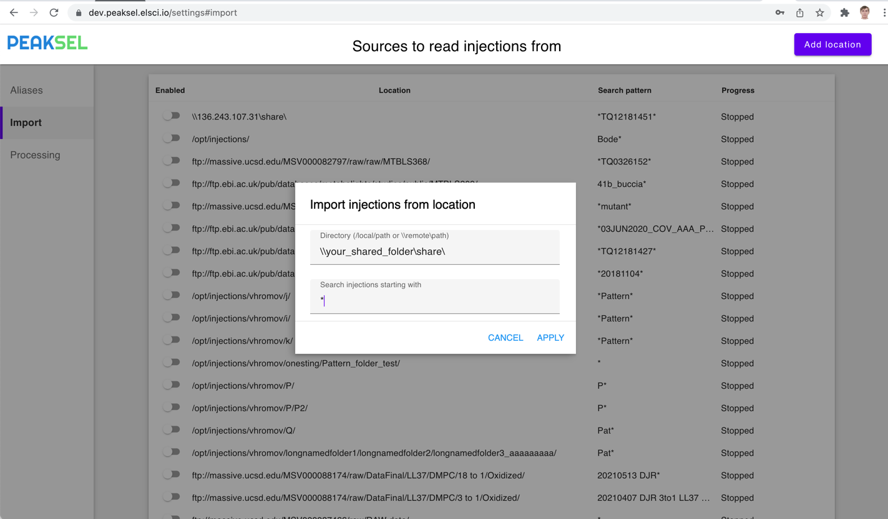

Automate import from vendor instruments
While it's possible to just drag'n'drop raw files into Peaksel, most organizations will benefit from setting up automatic import. This way your administrator can set up all the locations and the scientists will never have to deal with raw files and folders - everything is going to be manageable using Peaksel interface. The process looks like this:
- Specify locations where instruments write raw data
- Peaksel looks for the new raw files every several minutes
- Once discovered, the data is automatically loaded and processed
- When scientists open Peaksel, they see the new data and don't have to deal with files and folders
Configuring vendor folders
Peaksel is able to import the data located:
- In a Windows shared folder (SMB)
- At FTP server. Could be yours or an open database like MassIVE .
- On the local disk where Peaksel is running
For this you open Settings -> Import and press
Add location:
After that you'll need to enter the actual location and possibly the credentials to access the raw vendor files:
Then just turn on the importing and it will discover the files. You can add as many of these locations as needed. And you can turn on and off them at any point in time.